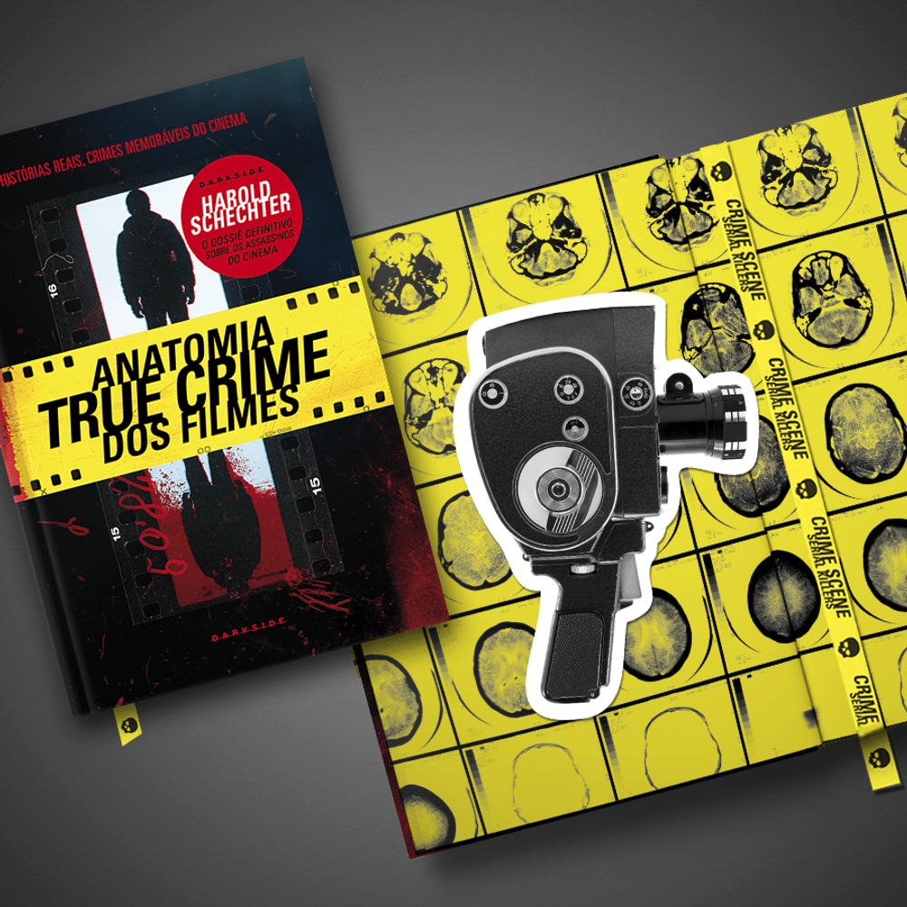

8 milhões de "plays". Os podcasts de true crime estão crescendo no Brasil, sobretudo entre as mulheres, o que impulsiona o lançamento de séries e livros sobre o tema. Nos EUA, é um dos mais consumidos.




8 milhões de "plays". Os podcasts de true crime estão crescendo no Brasil, sobretudo entre as mulheres, o que impulsiona o lançamento de séries e livros sobre o tema. Nos EUA, é um dos mais consumidos.
20%
Este é o número aproximado do aumento de venda de livros dos gêneros "true crime" e "thriller".
Esses gêneros literários oferecem vislumbres por trás das mentes mais perigosas, além de entregar
informações detalhadas sobre a ciência forense, o mundo da investigação e da criminologia.
O que filmes tão diferentes entre si, como Pacto de Sangue, de Billy Wilder, Perseguidor Implacável, de Don Siegel, e Alpha Dog, de Nick Cassavetes, têm em comum? Todos eles foram inspirados por histórias verídicas. Em Anatomia True Crime dos Filmes, nova obra da marca Crime Scene, o historiador Harold Schechter — autor de Anatomia do Mal — perfila psicopatas, assassinos em série, gângsteres, sádicos, linchadores e jovens atiradores de escolas que chocaram o mundo e influenciaram obras clássicas do cinema mundial.
Os assassinos em Festim Diabólico, de Alfred Hitchcock; os crimes passionais da Era do Jazz em Chicago, de Rob Marshall; o terrível matador de crianças, no clássico alemão M – O Vampiro de Düsseldorf, de Fritz Lang; os horrores escolares cometidos pelo serial killer ghostface em Pânico, de Wes Craven, e pelos terroristas adolescentes em Elefante, de Gus Van Sant. Esses e outros crimes cinematográficos se tornaram parte da história da cultura pop. E cada um encontrou inspiração em acontecimentos reais que forneceram a matéria-prima para alguns dos maiores sucessos de bilheteria, bem como filmes independentes, comédias macabras, clássicos de Hollywood e de horror gore.
Anatomia True Crime dos Filmes ajuda a contextualizar o fascínio que o casal Bonnie e Clyde, os ladrõesde corpos Burke e Hare, a dupla Leopold e Loeb, e o psicopata Ed Gein, entre muitos outros, exerceram para se fixar na imaginação do público e se tornar uma fértil fonte de inspiração para a tradição cinematográfica. A obra também destrincha a realidade por trás de obras consagradas como Psicose, de Hitchcock; Assassinato no Expresso Oriente, de Sidney Lumet; O Fugitivo, de Andrew Davis; e Anatomia de um Crime, de Otto Preminger.
A qualidade da pesquisa e da escrita de Harold Schechter já é conhecida pelos darksiders, por conta dos best-sellers Serial Killers: Anatomia do Mal, H.H. Holmes: Maligno — O Psicopata da Cidade Branca, Lady Killers Profile: Belle Gunness e, mais recentemente, pelo roteiro da graphic novel Ed Gein, ilustrada por Eric Powell. Nesta coleção de artigos reveladores, Schechter faz uma viagem fascinante por uma encruzilhada de fatos e ficção em que ele revela que algumas histórias reais são mais chocantes e fantásticas do que poderia sonhar o roteirista mais imaginativo. A Caveira os convida a essa macabra sessão de cinema.
Quando pensamos em assassinos em série, pensamos em homens. Mais precisamente, em homens matando mulheres inocentes, vítimas de um apetite atroz por sangue e uma vontade irrefreável de carnificina. As mulheres podem ser tão letais quanto os homens e deixar um rastro de corpos por onde passam ― então o que acontece quando as pessoas são confrontadas com uma assassina em série? Quando as ideias de “sexo frágil” se quebram e fitamos os desconcertantes olhos de uma mulher com sangue seco sob as unhas?
Esqueça tudo aquilo que você achava que sabia sobre assassinos letais ― perto de Mary Ann Cotton e Elizabeth Báthory, para citar apenas algumas, Jack, o Estripador ainda era um aprendiz. Inspirado na coluna homônima da escritora Tori Telfer no site Jezebel, Lady Killers: Assassinas em Série é um dossiê de histórias sobre assassinas em série e seus crimes ao longo dos últimos séculos, e o material perfeito para você mergulhar fundo em suas mentes. Com um texto informativo e espirituoso, a autora recapitula a vida de catorze mulheres com apetite para destruição, suas atrocidades e o legado de dor deixado por cada uma delas. As histórias são narradas através de um necessário viés feminista. Telfer dispensa explicações preguiçosas e sexistas e disseca a complexidade da violência feminina e suas camadas. A autora também contesta os arquétipos ― vovó gentil, mãe carinhosa, dama sensual, feiticeira traiçoeira, entre outros ― e busca entender por que as mulheres foram reduzidas a definições tão superficiais. Além disso, questiona a “amnésia coletiva” a respeito dos assassinatos cometidos por mulheres. Por que falamos de Ed Kemper e não de Nannie Doss, a Vovó Sorriso, que dominou as páginas dos jornais norte-americanos em 1950 por seu carisma e piadas mórbidas (ela matou quatro maridos)? Por que continuamos lembrando apenas de H.H. Holmes quando Kate Bender recebia viajantes em sua hospedaria (e assassinava todos que ousavam flertar com ela)?
A linha que divide o bem e o mal atravessa o coração de todo ser humano. Lady Killers: Assassinas em Série faz parte da coleção Crime Scene®: histórias reais, de assassinos reais, indicadas para quem tem o espírito investigador. Entre os títulos da coleção estão Casos de Família e Arquivos Serial Killers, de Ilana Casoy, e o best-seller Serial Killers: Anatomia do Mal, de Harold Schechter. O livro de Tori Telfer, ilustrado pela artista salvadorenha Jennifer Dahbura e complementado com uma rica pesquisa de imagens, se junta a estas grandes fontes de estudo para alimentar a mente dos darksiders mais curiosos. Através das páginas de Lady Killers: Assassinas em Série os leitores vão perceber que estas damas assassinas eram inteligentes, coniventes, imprudentes, egoístas e estavam dispostas a fazer o que fosse necessário para ingressar no que elas viam como uma vida melhor. Foram implacáveis e inflexíveis. Eram psicopatas e estavam prontas para dizimar suas próprias famílias. Mas elas não eram lobos. Não eram vampiros. Não eram homens. Mais uma vez, a ficha mostra: elas eram horrivelmente, essencialmente, inescapavelmente humanas.
O true crime ― filmes, séries e livros que exploram a motivação e o desenrolar de crimes reais ― é um dos gêneros mais consumidos no Brasil e no mundo atualmente. Aqui, um sinônimo de true crime é o podcast Modus Operandi, de Carol Moreira e Mabê Bonafé, que nasceu em janeiro de 2020 e angariou uma audiência gigantesca.
Agora, as duas trazem para o papel toda a experiência que acumularam em mais de cem episódios em um livro definitivo para quem quer saber tudo desse universo que conquista cada vez mais fãs.
Em Modus Operandi: Guia de true crime, as autoras abordam as principais bases do gênero de maneira simples, objetiva e bem-humorada. Entre capítulos sobre sistema de justiça, polícia, investigação, casos arquivados, serial killers e outros, a dupla descreve dezenas de crimes que impactaram o Brasil e o mundo, conta a história de assassinos em série e traz diversas curiosidades e fontes para quem quer saber mais sobre o assunto.
Também temos canais no youtube que fazem grande sucesso!